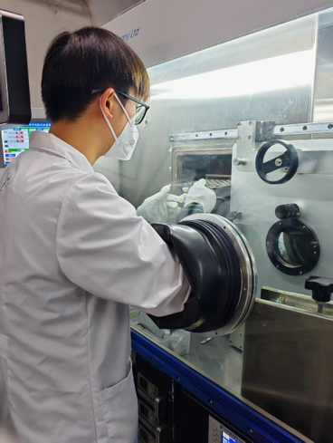
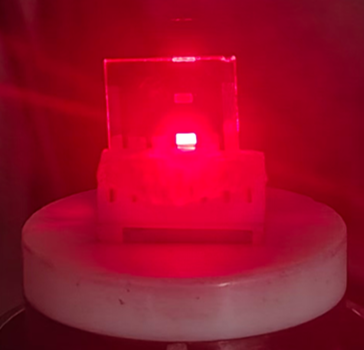
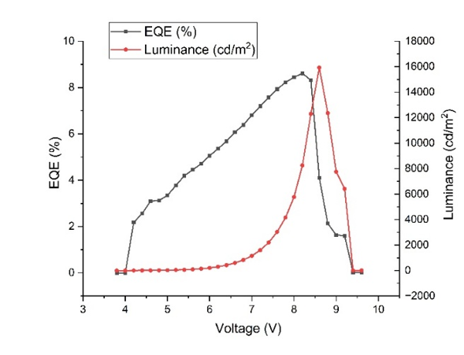
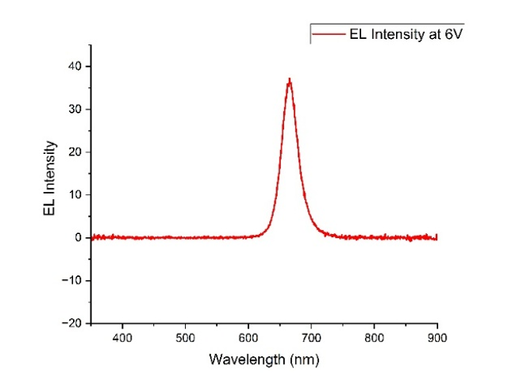
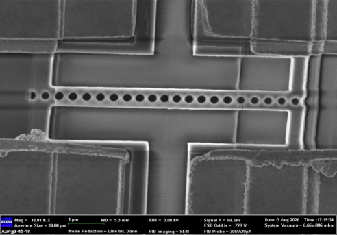
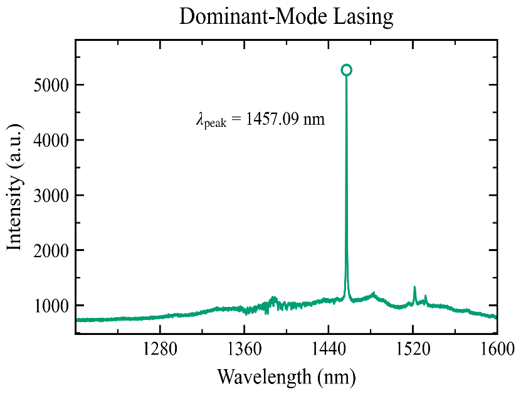

Colloidal quantum-well LEDs
I fabricated inverted LEDs with a colloidal quantum-well emitter and measured their electrical and optical response. A later red-emitting batch reached a peak external quantum efficiency (EQE) of 8.61% and a maximum luminance of 15,930 cd/m².




Fabrication
Inverted stackITO / ZnO / CQW / CBP / MoO₃ / Al
I spin-coated the ZnO and quantum-well layers, annealed the ZnO before coating the emitter, and thermally evaporated CBP, MoO₃, and the Al contact.
Electrical and optical measurements




Nanobeam photonic crystal laser
I used scanning electron microscopy (SEM) to image the nanobeam and characterized the same device by photoluminescence (PL). The spectrum shows a dominant emission peak at 1457.09 nm.



